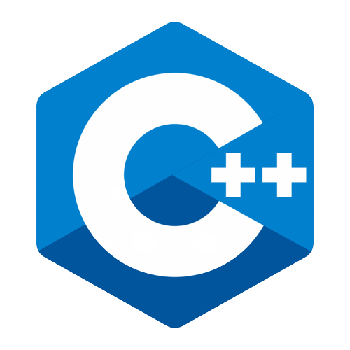

1. Java
Java merupakan bahasa pemrograman yang dapat dijalankan di berbagai
platform, dari mulai PC sampai perangkat mobile. Bahasa pemrograman
ini awalnya dikembangkan
pada The Green Project pada tahun 1991 oleh Sun Microsystem yang
kemudian dilepas pada Oracle. Nama Java sendiri dipilih karena salah
seorang pendiri Java,
James Gosling, sangat menyukai kopi murni yang langsung digiling
dari mesin giling (kopi tubruk) dimana kopi jenis ini berasal dari
pulau Jawa di Indonesia.

2. C
Bahasa C ini termasuk bahasa pemrograman tertua yang pernah ada. Bahasa pemrograman C ini dikembangkan dari sekitar tahun 70-an. Pembuat bahasa C adalah Dennis Ritchie. Bahasa C menjadi bahasa pemrograman yang populer di Indonesia karena hampir sebagian besar perguruan tinggi jurusan IT ataupun lembaga kursus pemrograman menggunakan bahasa ini untuk dipelajari pertama kali sebelum mempelajari bahasa pemrograman yang lain. Bukan tanpa sebab bahasa C ini menjadi dasar untuk mempelajari bahasa pemrograman yang lain, karena memang bahasa C ini merupakan "bapak" dari bahasa pemrograman lain seperi C#, Java, C++, dan lain sebagainya.

3. Python
Python adalah bahasa pemrograman tujuan umum yang ditafsirkan,
tingkat tinggi. Dibuat oleh Guido van Rossum dan pertama kali
dirilis pada tahun 1991,
filosofi desain Python menekankan keterbacaan kode dengan penggunaan
spasi putih yang signifikan.
4. Java Script
Pada tahun 1994 JavaScript mulai dikenal, pada saat itu web dan
internet sudah mulai berkembang. JavaScript didesain oleh Brendan
Eich yang merupakan
karyawan Netscape. Transformasi nama JavaScript, dimulai dari Mocha,
Mona, LiveScript, hingga akhirnya resmi bernama JavaScript.
JavaScript adalah suatu bahasa pemrograman tingkat tinggi dan
dinamis. JavaScript populer di internet dan dapat bekerja di
sebagian besar penjelajah web
populer seperti Google Chrome, Internet Explorer, Mozilla Firefox,
Netscape dan Opera. Kode JavaScript dapat disisipkan dalam halaman
web menggunakan tag script

5. C++
C++ merupakan bahasa pemrograman pengembangan dari bahasa C. C++ dan C memiliki sintaks penulisan yang hampir sama, meski begitu kedua bahasa pemrograman ini memiliki perbedaan pada penyelesaian masalahnya. Pada bahasa C penyelesaian masalah dilakukan dengan membagi-bagi kedalam sub-sub masalah yang lebih kecil lagi atau bisa disebut bahasa pemrograman prosedural, sedangakan C++ berorientasi pada objek dimana permasalahan dibagi-bagi kedalam class-class. C++ pertama kali dikembangkan oleh Bjarne Stroustrup.
